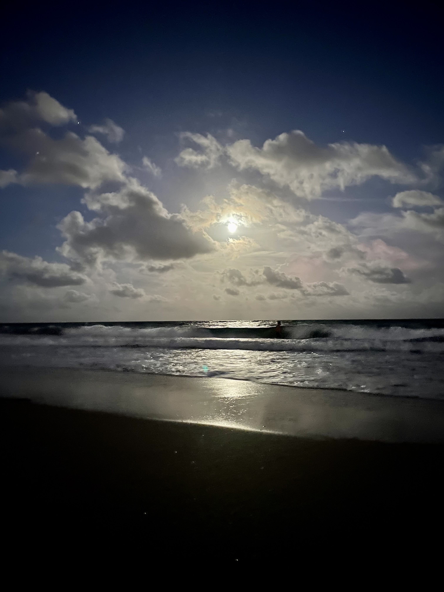
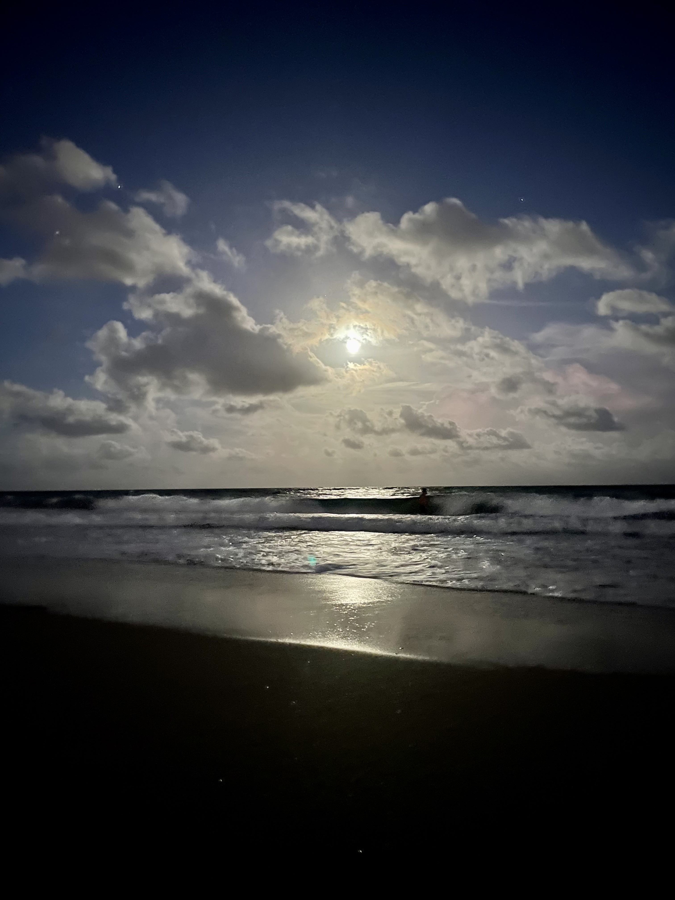

Something I particularly like to do is photograph the beach at sunset and sunrise. It's so interesting to see the treansition in colors and shapes in just such a small time span. In these photos you will see the sun and the moon as well as light from each in some.
 
